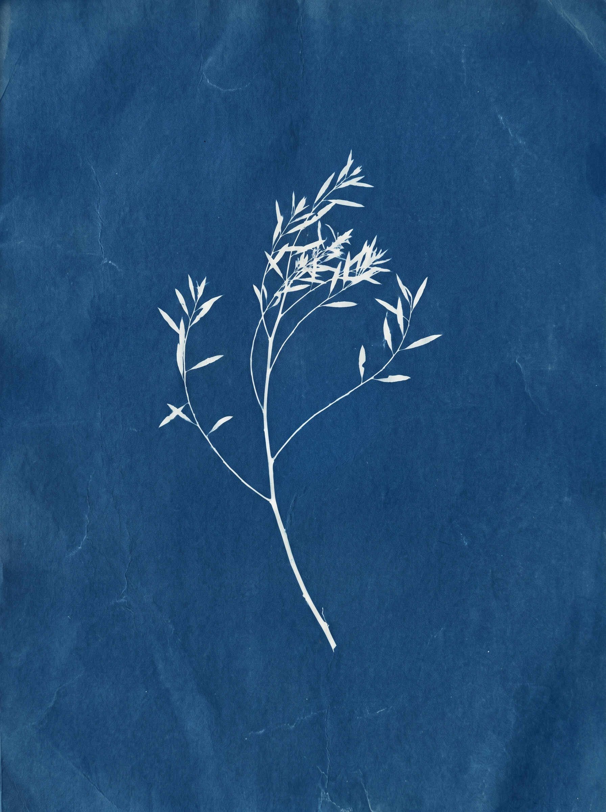

We study where AI meets complex, non-standard business — research, design, and deliver.
EasyZ 是一支小型研究型团队。我们不接所有 AI 需求——
只做那些「标准方案解决不了、非标到需要重新研究」的问题。
全链路交付：问题研究 · 方案设计 · 工程落地。

客户有 3 套 SaaS 系统（淘宝商家端、美团商家端、自建 ERP），运营每天花大量时间在多个平台间搬运数据、复制粘贴。
我们做的是：把这些重复劳动自动化，覆盖商品 / 采购 / 运营 三段——减少重复工作，打通数据孤岛。